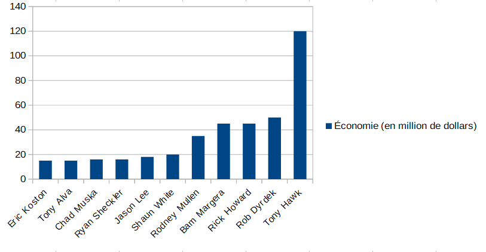

La plancheLe gripLes rouesLes roulementsLes trucks
L'histoire du skate
Le skateboard est né dans les années 50 sur les côtes d'Hawaii et en californie. Il tire son origine du surf. En effet, les surfeurs de l'époque voulant continuer à ressentir la sensation de la glisse malgré l'absence de vague ont inventé le skate. La pratique sportive s'est donc développé dans les "pools" qui était des piscines asséché.
L'année 1978 sera celle qui révolutionnera le monde du skate avec l'apparition du "ollie". Cette figure, permettant de sauter, revolutionnera complétement la pratique du skateboard en ouvrant la porte à de toutes nouvelles figure toujours plus impressionnante.
On peut également s'attarder sur le tout premier 900. Cette figure, réalisée en 1999 aux x games, marquera de par sa complexité l'histoire du sport.
L'influence du skate sur le reste du monde
Bien qu'à l'origine le skate était pratiqué par des petits groupe en marge de la société, le skate a commencé par la suite à influencer d'autres domaines.
La musique
Quand on parle de musique en lien avec le skate on pense très vite au skate punk, un dérivé du punk rock. On peut citer par exemple le groupe Black Flag qui sera fortemment influencer par ce style musical. Désormais de nombreux style de musique sont influencé par la culture skate, nottament le rap. Certain skatteur se sont même lancé dans la musique. C'est le cas, par exemple, de Harold Hunter dont voici l'un des morceaux "Harold Hunter Danny Supa - Mixtape - 1998":
La mode
Supreme x Louis Vuitton
De nos jours, avec l'explosion du streetwear le skate a su se meler à la mode et à la haute couture. On peut citer par exemple la célèbre marque Luis Vuitton qui s'est associé à la marque de skate supreme en 2017 pour une collection désormais mythique.
Le metier de rider
Aujourd'hui, le skate est devenu un vrai métier pour certain pratiquant de haut niveau. Que ce soit grace aux récompenses de certaines grandes compétitons, ou grace à certain sponsor (d'autant plus depuis l'explosion des réseaux sociaux) il existe des skateurs qui parviennent à vivre très largement de leur sport.
Pour illustrer ceci voici un graphique réalisé sur libreOfifice Calc représentant les économies des 10 riders les plus riches au monde. (source : laskateboarderie.com)

 Le skateboard
Le skateboard